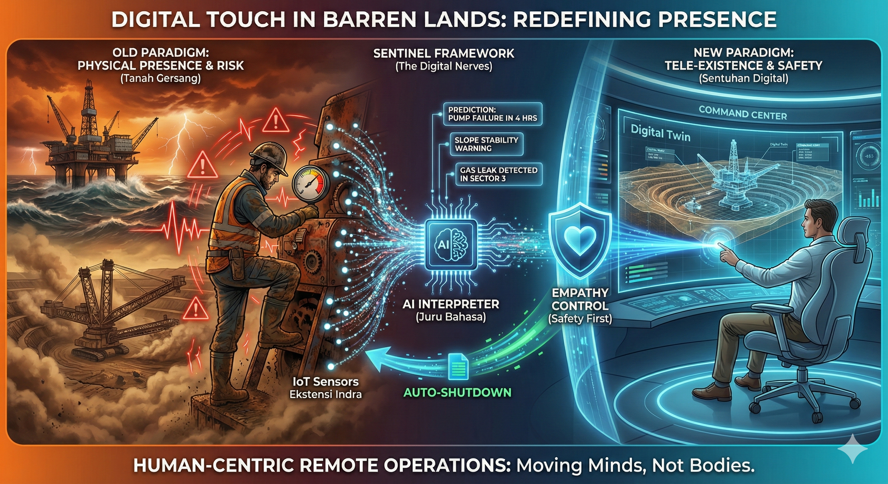

7 UAS-2 My Opinions
Sentuhan Digital di Tanah Gersang: Redefinisi Kehadiran Manusia dalam Industri Ekstraktif
Definisi Opini Saya:
Sesuai dengan pemahaman bahwa opini adalah "masakan rumahan" yang meracik informasi, nilai, dan perasaan, opini saya ini berakar pada informasi tentang tingginya fatalitas kerja di lokasi remote, perasaan urgensi untuk melindungi nyawa, dan nilai bahwa teknologi harus memanusiakan manusia. Ini adalah pandangan tentang bagaimana kita harus berhenti mengirimkan tubuh biologis kita ke tempat yang membahayakan, dan mulai mengirimkan "saraf digital" kita sebagai gantinya.

7.1 I. Krisis Metode Konvensional: Ilusi Keharusan Fisik di Zona Bahaya
Industri ekstraktif (pertambangan dan Oil & Gas) saat ini menghadapi paradoks moral dan operasional. Kita memiliki teknologi abad ke-21, namun masih menggunakan metode abad ke-19 dalam hal penempatan manusia.
Model operasional konvensional menuntut kehadiran fisik manusia di offsite area—tengah laut lepas atau pedalaman hutan—hanya untuk melakukan pemantauan (monitoring). Ini adalah krisis efisiensi dan kemanusiaan. Mengirimkan manusia untuk mengecek tekanan pipa gas secara manual atau mengukur stabilitas lereng tambang di tengah badai bukan lagi sebuah heroisme, melainkan sebuah kecerobohan sistemik.
Dalam konteks komunikasi, "dialog" antara insinyur dengan lingkungan kerjanya terhambat oleh keterbatasan fisik. Manusia lelah, manusia bisa keracunan gas, dan persepsi manusia subjektif. Jika kita bersikeras bahwa "data yang valid adalah data yang diambil tangan manusia", kita sedang menyangkali potensi Kecerdasan Buatan (AI) dan IoT yang mampu "merasakan" lingkungan jauh lebih presisi dan tahan banting daripada kulit dan mata kita.
7.2 II. Transformasi: Dari Site-Centric Menjadi Human-Centric Remote Operations
Kita memerlukan pergeseran paradigma dari Site-Centric (manusia harus pergi ke lokasi alat) menjadi Human-Centric Remote Operations (alat mengirimkan realitasnya ke manusia).
Tambang dan kilang minyak masa depan bukanlah tempat yang ramai dengan manusia, melainkan "artefak sunyi" yang berdenyut dengan data. Transformasi ini mengubah definisi "bekerja di tambang". Seorang engineer tidak lagi didefinisikan oleh helm dan sepatu bot lumpurnya, melainkan oleh kemampuannya mengorkestrasi ribuan sensor dari jarak ratusan kilometer.
Dalam lingkungan baru ini, tujuannya adalah menciptakan "Tele-Eksistensi". Ini adalah keadaan di mana insinyur "hadir" secara operasional di lokasi tambang melalui perpanjangan indra digital, tanpa risiko biologis sedikitpun. Komunikasi interpersonal berubah bentuk: bukan lagi teriakan lewat handy-talky di lapangan yang bising, melainkan analisis kolaboratif di control room yang tenang dan beradab, berbasis data real-time.
7.3 III. The SENTINEL Framework: Solusi IoT untuk Kedaulatan Keselamatan
Sebagai solusi konkret, saya mengajukan konsep SENTINEL (Sensor-based Environmental Network for Tele-monitoring and Intelligence). Ini bukan sekadar memasang sensor, melainkan mengubah filosofi operasional menjadi sistem saraf global.
Dalam model SENTINEL, operasi offsite dijalankan melalui tiga lapisan proses:
7.3.1 1. Ekstensi Indra (The Sensory Extension)
Lapisan ini menggantikan peran inspeksi fisik. Kita menyebar ribuan node IoT (suhu, getaran, gas, visual) sebagai "ujung saraf" perusahaan.
- Peran Sensor: Bertindak sebagai "kulit" dan "mata" yang tidak pernah tidur. Sensor Remote Sensing satelit dan ground-based memberikan data prescriptive tentang pergeseran tanah atau kebocoran pipa mikro yang tidak terlihat mata telanjang.
- Nilai: Menghilangkan "blind spot" yang selama ini menjadi penyebab kecelakaan fatal. Informasi bukan lagi dicari (reaktif), tapi mengalir (proaktif).
7.3.2 2. Juru Bahasa Lingkungan (The Environmental Interpreter)
Data mentah dari IoT seringkali membingungkan (noise). Di sini, AI berperan sebagai "Juru Bahasa" yang menerjemahkan getaran mesin menjadi sebuah "keluhan" atau "peringatan".
- Informasi menjadi Wawasan: Algoritma mengubah data time-series menjadi narasi: "Pipa A akan meledak dalam 4 jam karena korosi," bukan sekadar deretan angka.
- Komunikasi: Ini memungkinkan bumi/mesin "berbicara" langsung kepada operator dalam bahasa yang dimengerti manusia, memfasilitasi pengambilan keputusan yang berbasis wisdom, bukan kepanikan.
7.3.3 3. Kontrol Berbasis Empati (Empathy-Driven Control)
Tujuan akhir dari SENTINEL bukan efisiensi mesin semata, melainkan keselamatan manusia (Hati/Values).
- Otonomi: Sistem diizinkan melakukan shutdown otomatis jika mendeteksi anomali yang mengancam nyawa, melampaui birokrasi izin manusia yang lambat.
- Human Energon Preservation: Energi manusia tidak lagi habis untuk perjalanan dinas yang melelahkan (commuting), tetapi difokuskan untuk inovasi dan strategi dari kantor pusat (Command Center).
Kesimpulan Opini
Penerapan IoT Remote Sensing di industri offsite bukanlah tentang menggantikan manusia dengan robot. Ini adalah tentang memuliakan manusia. Dengan menarik manusia keluar dari zona bahaya dan membiarkan teknologi mengambil alih risiko fisik, kita sedang menerapkan komunikasi interpersonal tingkat tertinggi: mendengarkan kebutuhan keselamatan rekan kerja kita dan meresponsnya dengan inovasi. Inilah wujud "Pikiran yang Indah" dalam rekayasa modern.